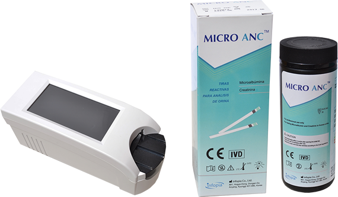

TIRAS REACTIVAS PARA ANÁLISIS DE ORINA PARA MEDICIÓN DE MICROALBÚMINA Y CREATININA MICROANC 

CARACTERÍSTICAS:
Resultados en análisis de orina para medición de microalbuminuria y creatina.
Diagnóstico in vitro para la determinación cuantitativa de microalbuminuria y creatina en orina.
Generalmente usado para el diagnóstico de enfermedades renales.
Las tiras pueden ser leídas de forma visual o instrumentalmente, utilizando el analizador.
Tiras reactivas para análisis de orina: microalbúmina y creatinina.
Resultados en 60 segundos.
Prueba cualitativa y cuantitativa.
Presentaciones: 10, 25 y 50 tiras.
Registro: 1462R2013 SSA
DATOS COMPLEMENTARIOS: Para mayor información comunicarse a:
FORE CARE MÉDICAL, S.A. DE C.V.
Tels.: (55) 5568-8240, 5568-8061
e-mail: info@forecaremedical.com
atencionclientes@forecaremedical.com
ventasprivado@forecaremedical.com
ventasgobierno@forecaremedical.com
www.forecaremedical.com